Префектура Вакаяма · Иваде · ремесло
Нэгоро-нури: красный лак из Вакаямы, который становится красивее с каждым годом
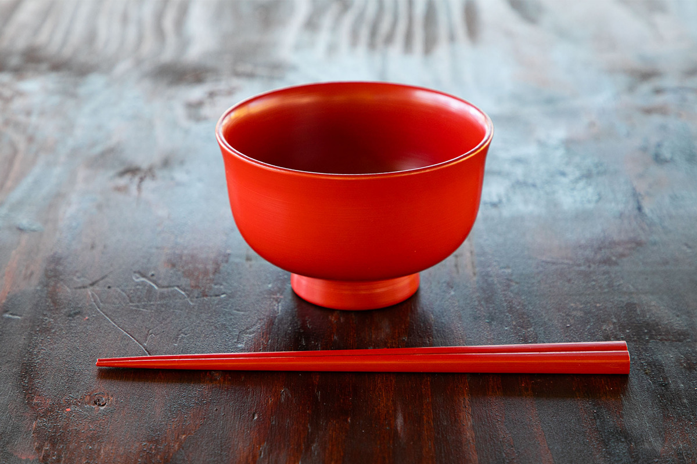
Нэгоро-нури называют прародителем японской лаковой посуды: ему около 900 лет. В отличие от многих капризных лаковых вещей, за ним легко ухаживать, а с годами он становится только красивее.
Мастер
Мэгуми Ито и посуда на всю жизнь
Лак нэгоро-нури родился при храме Нэгородзи в городе Иваде, на севере префектуры Вакаяма. Это посуда для каждого дня, в которой польза и красота неотделимы друг от друга: японцы называют это «красотой употребления». Чаши, палочки, сосуды для сакэ из такого лака служат десятилетиями.
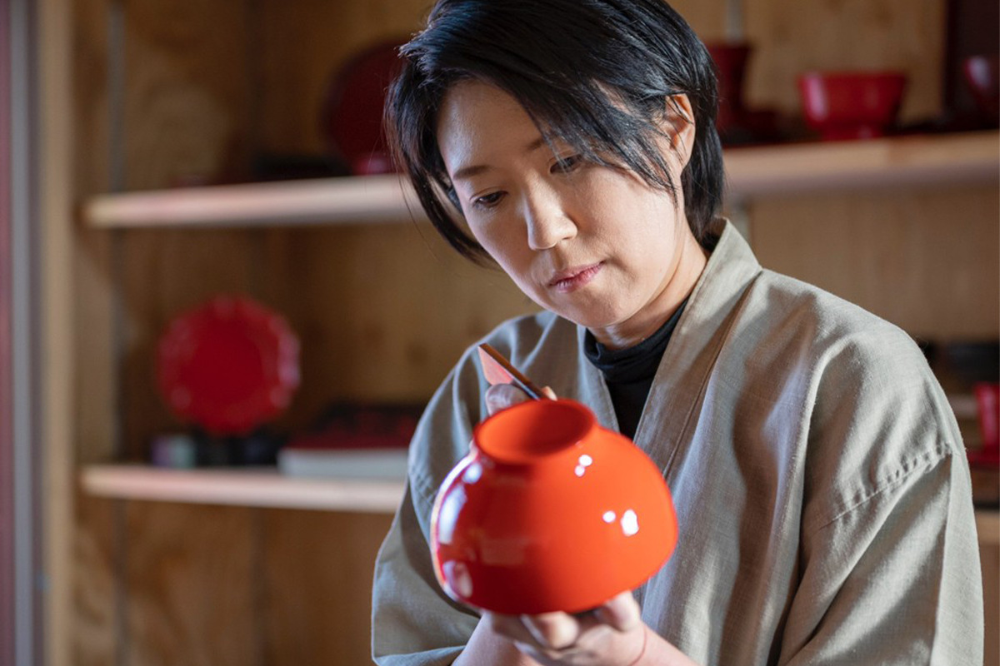
История
Что такое нэгоро-нури
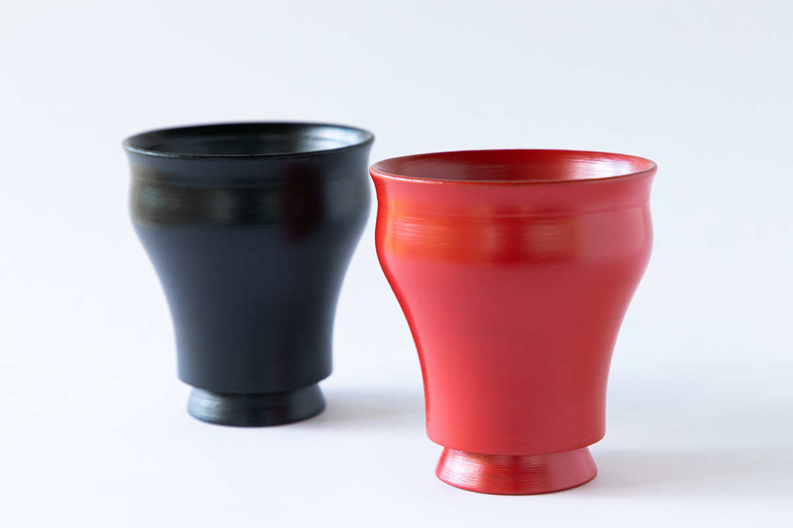
Мунэёси Янаги (1889–1961), философ и отец японского движения народного ремесла мингэй, писал о нём в книге «Япония ручной работы»:
«Нэгоро-нури из храма Нэгородзи стал преданием. Но если кто-то всё ещё пробует его повторить, то потому, что этот лак сложился в собственный образец»
Мунэёси Янаги
Храм Нэгородзи основал около 900 лет назад Какубан (1095–1143), высокий монах с горы Коя. Храм получил статус молитвенного храма экс-императора Тоба (1103–1156). Уже тогда здесь делали ритуальную утварь и посуду для монахов, которую и стали называть «нэгоро». Красная поверхность от долгого использования стирается, и сквозь неё проглядывает чёрный лак. Именно этот узнаваемый вид, как замечал и Янаги, отличает технику нэгоро от других лаков Японии.
«Деревянную основу нэгоро-нури оклеивают льняной тканью, а в уязвимых местах ткань кладут дополнительно. Затем наносят прочный лаковый грунт, три раза покрывают чёрным лаком и один раз красным. И ещё одно условие: нэгоро-нури это то, что делают в Нэгоро»
Мэгуми Ито
По этому описанию понятно, почему прочная лаковая вещь требует нескольких месяцев работы, а вместе с заготовкой материалов иногда и целого года.
«Около 400 лет назад Хидэёси Тоётоми пошёл войной на край Кисю, и нэгоро-нури прервался. Здесь жило много мастеров лака, плотников и других ремесленников, с этим местом считались даже правители. Говорят, мастера, бежавшие от войны, разошлись по стране и унесли технику лака в другие края. Знаменитый лак Вадзима-нури тоже из их числа»
Мэгуми Ито
Хидэёси Тоётоми (1537–1598) был военачальником, объединившим Японию в конце XVI века. Техника дошла и до соседнего Куроэ в городе Кайнан, где издавна делали недорогую лаковую посуду для всех.
«Куроэ, как и следует из названия, славился чёрным лаком. В детстве у нас дома была пластиковая посуда с чёрным и красным покрытием. Её красили точно так же, как нэгоро»
Мэгуми Ито
Лак из Куроэ был в каждом доме, и Мэгуми Ито долго не сомневалась, что нэгоро-нури это и есть посуда из Кайнана.
Встреча
Как учительница стала мастером лака
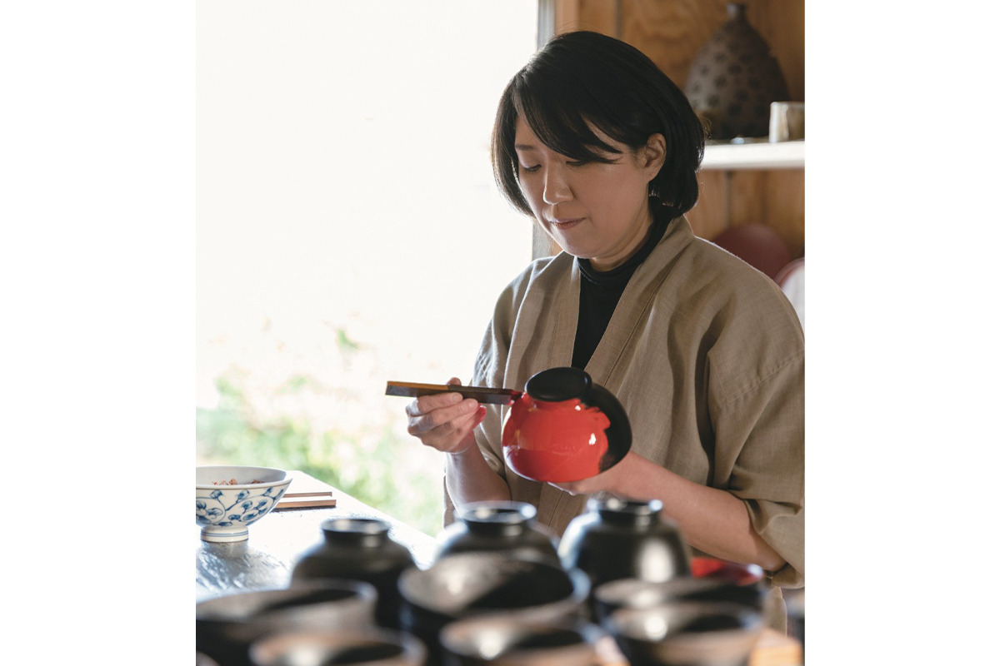
Мэгуми Ито изучала японскую живопись и хотела преподавать. В средней школе, куда её направили, она сопровождала учеников на занятие по лаку и познакомилась с учителем, который вёл курс нэгоро-нури.
«Тогда я впервые узнала, что нэгоро родом из Иваде. Что у нас есть такая прекрасная вещь, что она исчезла и теперь её возрождают… Я остановилась и подумала: учительницей хотят стать многие, а продолжить это ремесло, наверное, могу только я, человек, который здесь родился и вырос»
Мэгуми Ито
Она начала учиться, затем стала преподавателем курса нэгоро-нури при программе Иваде по сохранению традиций и занялась ремеслом всерьёз. Многому её научил историк искусства, который изучал нэгоро-нури и позволил ей прикоснуться к старинным вещам.
«Меня поразили красота и сила нэгоро, которое пережило сотни лет. Красный лак кладут на чёрный только один раз, поэтому при долгом использовании красный стирается и проступает чёрный. Это красота, которая появляется от употребления. Тогда мне захотелось самой делать посуду, которая проживёт сотни лет. Эту красоту невозможно забыть»
Мэгуми Ито
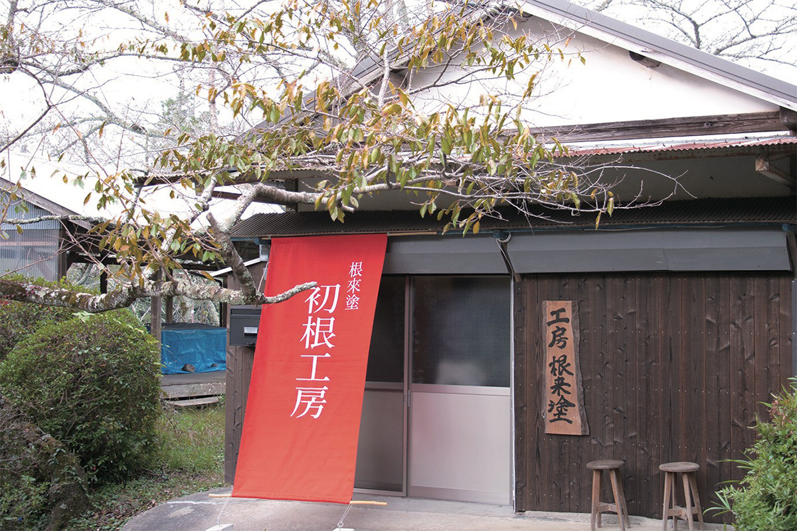
Быт
Посуда, которую передают детям
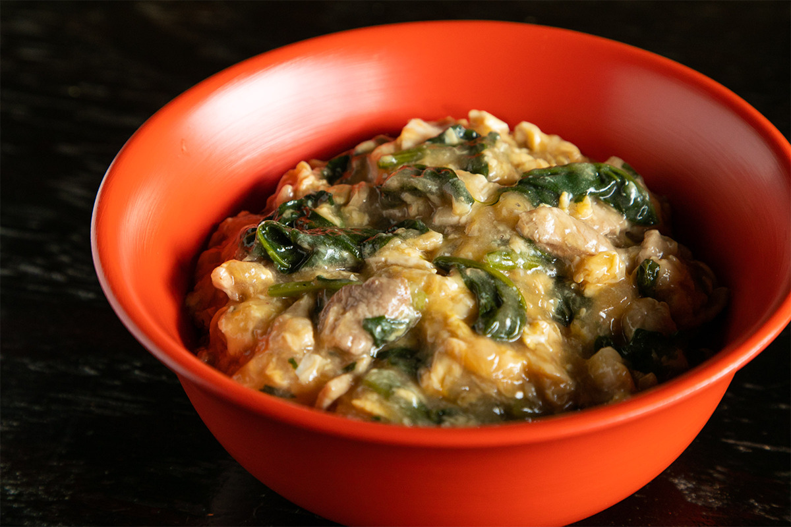
Нэгоро-нури создавали как храмовую утварь, и Мэгуми Ито слегка меняет форму и размер вещей, чтобы ими было удобно пользоваться сегодня.
«Например, делаю ножку чаши чуть ниже. Разница тонкая, но именно от таких мелочей зависит, удобно ли вещью пользоваться. Главное правило: я сама должна хотеть такую вещь. У верхнего красного слоя много оттенков, поэтому принимаю и заказы»
Мэгуми Ито
Она советует дарить нэгоро-нури ребёнку сразу после рождения, чтобы он рос рядом с этой посудой.
«Пока малыш не может держать чашку сам, пусть начинает с помощью родителей и растёт вместе со своей посудой. За нэгоро-нури ухаживают и продолжают им пользоваться, и в этом его красота и богатство. Хочу, чтобы такая вещь была рядом с человеком до последнего дня. А если её потом подхватит следующее поколение, лучшей радости для меня нет»
Мэгуми Ито
Процесс
Как делают нэгоро-нури
Основа
Мастер лака работает вместе с токарем, который вытачивает деревянную основу. Кроме традиционных чаш и сосудов для сакэ сегодня делают и новые формы, например чашки. Дерево выбирают по назначению: дзелькву, японский кипарис хиноки, чёрное дерево.
Грунт
Сначала поры дерева закрывают, много раз втирая сырой лак. Затем готовят шпатлёвку «саби»: тонкий порошок глины смешивают с водой и сырым лаком, выдерживают больше суток и снова добавляют лак. Её наносят шпателем. Края чаши закрывают льняной тканью для прочности, а границу ткани заглаживают той же шпатлёвкой. Слои шпатлёвки повторяют, пока грунт не станет по-настоящему прочным.
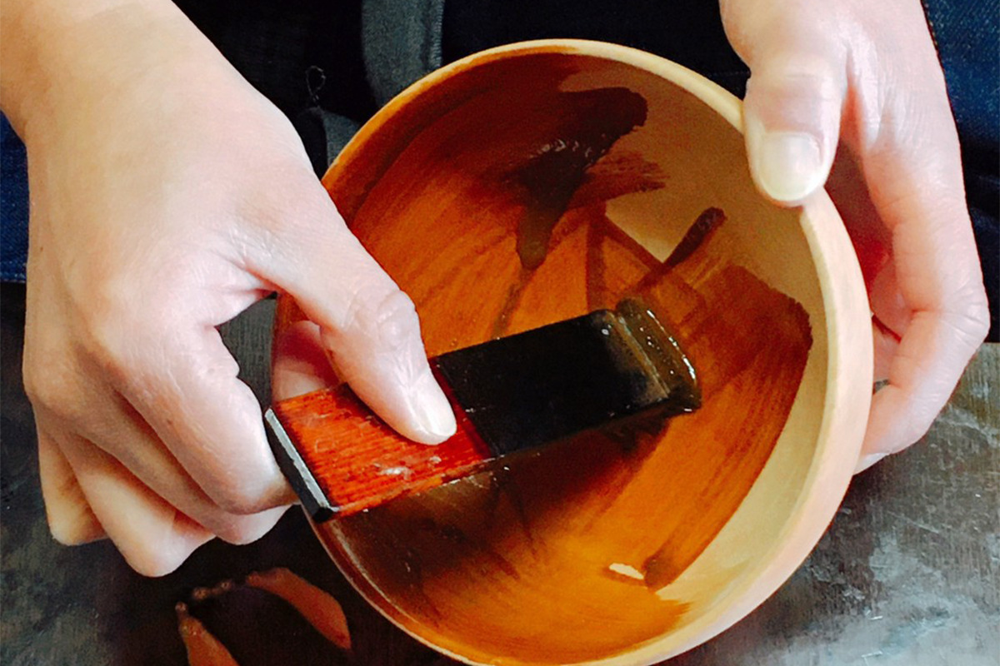
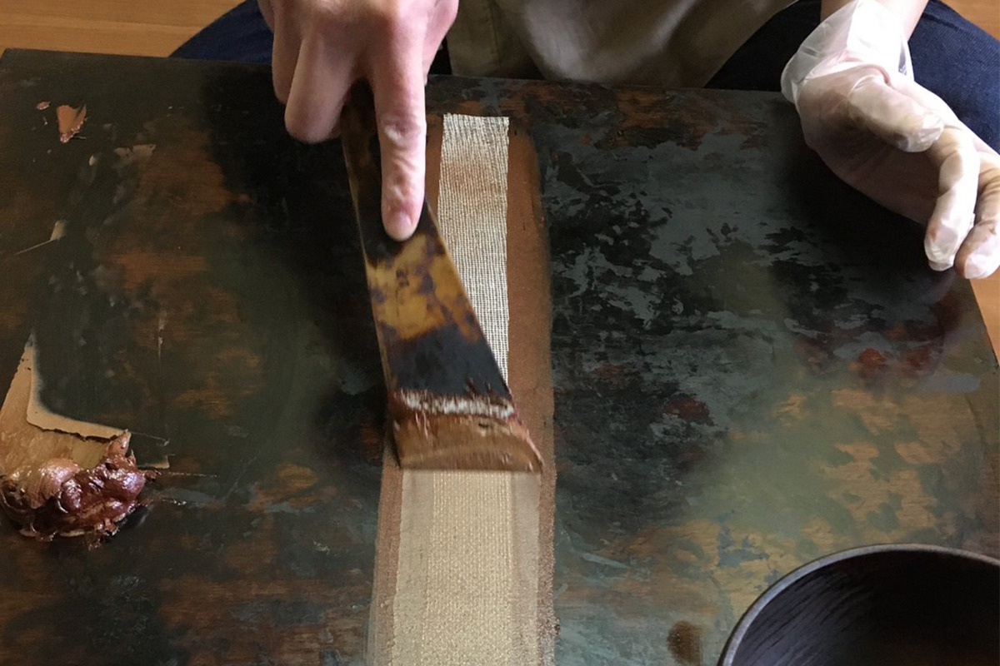
Покраска
Сначала три раза наносят чёрный лак, потом один раз красный. Чёрные промежуточные слои Мэгуми Ито старается делать как можно тоньше, чтобы вещь не стала тяжёлой. Верхний красный слой выходит немного толще промежуточных.
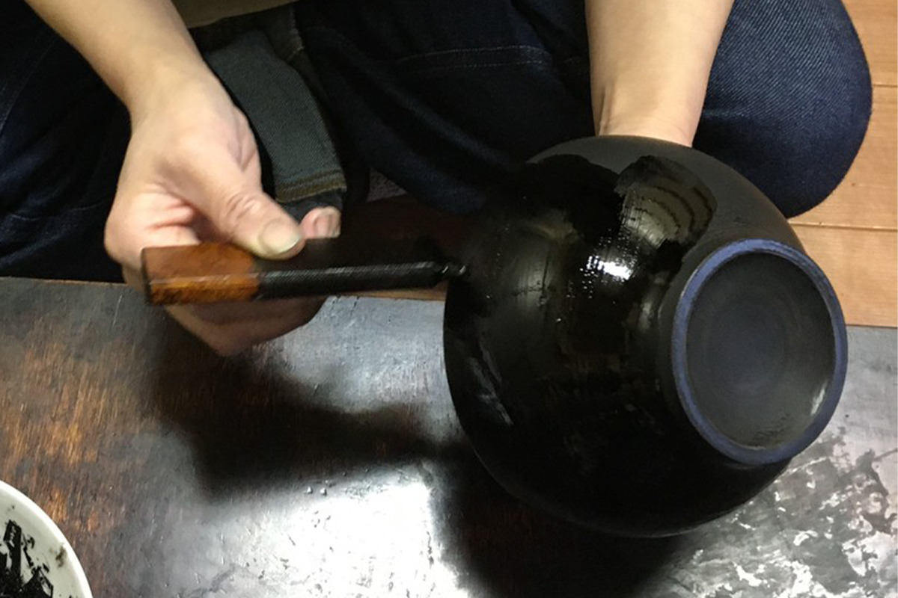
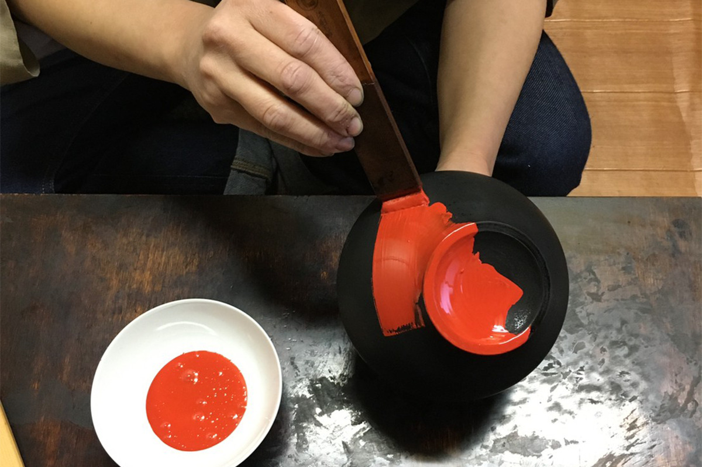
Готовая вещь
Со временем из-под красного проступает чёрный лак: так нэгоро-нури, покрытый слой за слоем, меняется с годами.
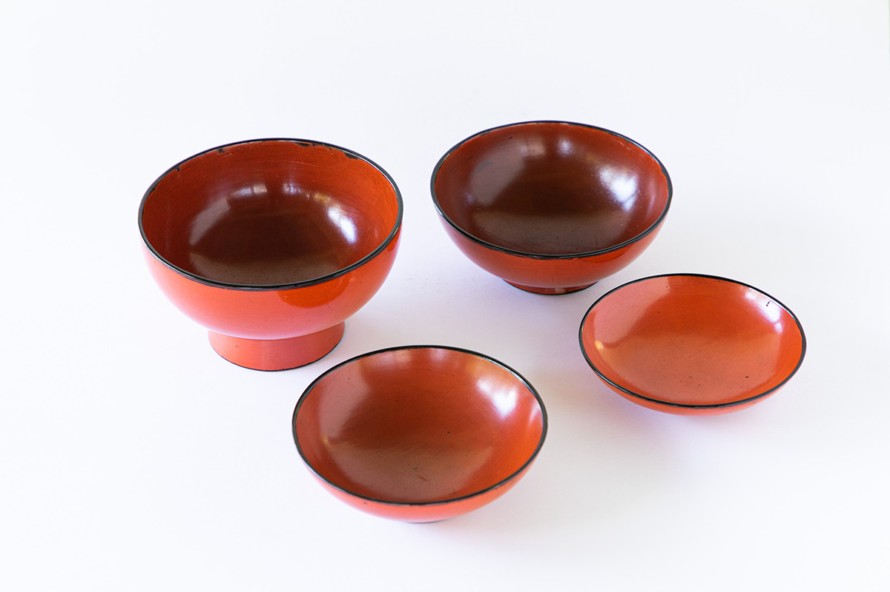
Купить
Какие вещи выбрать
Мэгуми Ито работает в мастерской при храме Нэгородзи и принимает заказы на нужный оттенок красного. В 2022 году её посуду показывали на выставке «Ватаси нэгоро» в Токио. Ниже вещи из той выставки с ценами 2022 года.
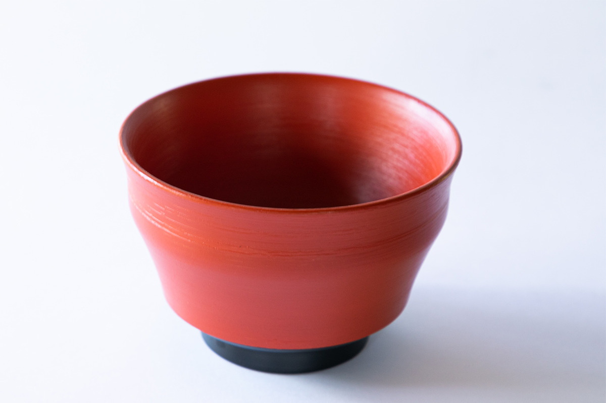
Изначально такую чашу делали, чтобы ставить на подставку для чайных чаш, и нэгоро-нури той же формы хранится в Токийском национальном музее. Мастер сделала не копию: она немного изменила размер, чтобы чаша подходила для риса.
«Низ чёрный, наверное, потому, что чашу ставили на подставку и эту часть почти не было видно. Красный лак стоил дорого, и в старину тоже делали разумно. В чашу можно класть и рис, и суп, а в Вакаяме в неё наливают тягаю, рисовую кашу, сваренную на обжаренном чае ходзитя»
Мэгуми Ито
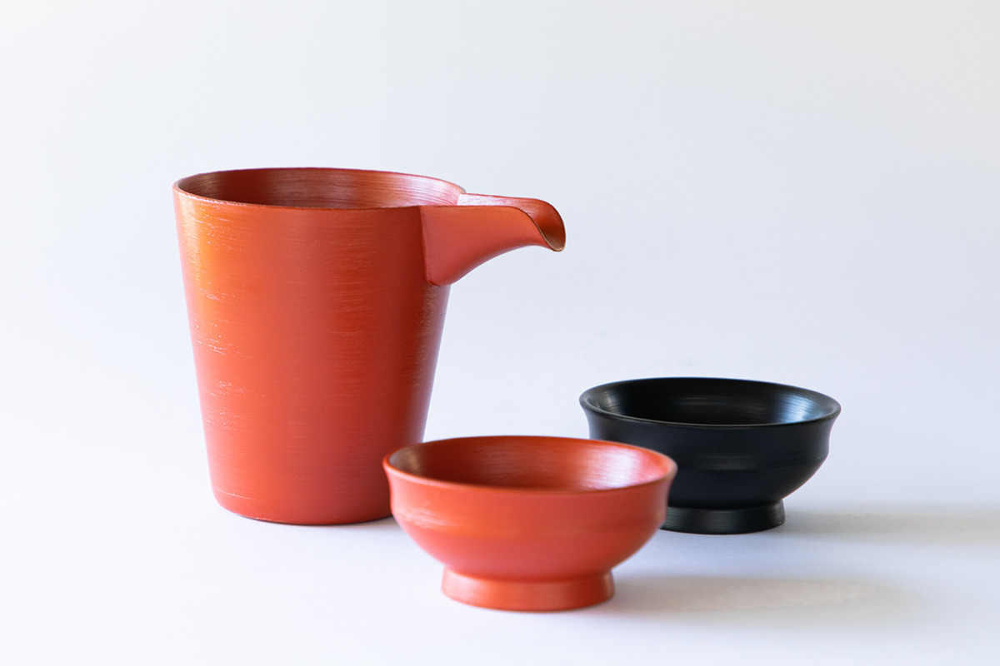
«Сосуд с носиком я сделала так, чтобы его было удобно держать одной рукой. Он годится не только для сакэ: в него можно налить соус для лапши или карри. В чарку можно положить закуску. Всё зависит от вас»
Мэгуми Ито
Вещи нэгоро издавна приспосабливали к новым задачам. Квадратный поднос со срезанными углами времён Муромати в эпоху Эдо разрезали по диагонали, и он дошёл до наших дней треугольным. Для этой серии мастер предложила новый оттенок красного, который хорошо смотрится рядом с керамикой.
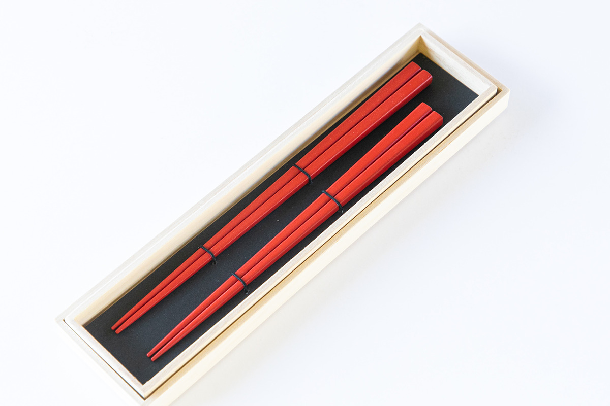
Если начинать знакомство с нэгоро-нури, рекомендуем палочки. Тонкие слои лака не отслаиваются, а постепенно стираются, и эту красоту времени лучше всего видно на вещи, которой пользуешься каждый день.
«Эти палочки из чёрного дерева. Даже если кончики сотрутся, само дерево прочное, и ими можно пользоваться дальше»
Мэгуми Ито
Мастерская нэгоро-нури «Хацунэ»
- Адрес
- префектура Вакаяма, Иваде, Нэгоро, 2168, на территории храма Нэгородзи